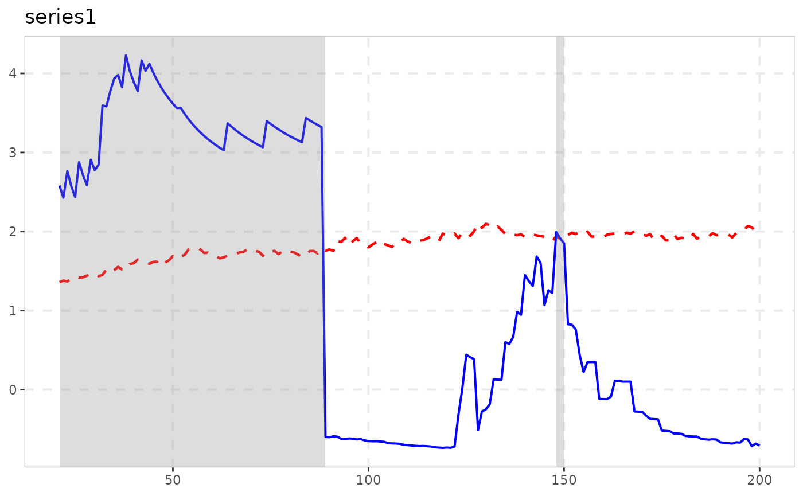

Why another test
radf() (the classic PSY GSADF test) assumes the
innovation variance is constant. Real financial series usually don’t
have constant volatility, and Harvey, Leybourne, Sollis & Taylor
(2016) show that when volatility is time-varying, radf()’s
standard critical values no longer control size –
radf_wb_cv() already addresses this in exuber via a wild
bootstrap.
radf_tt() implements a different, bootstrap-free fix
from Kurozumi, Skrobotov & Tsarev (2024, Journal of Financial
Econometrics): instead of resampling, it time-deforms the
series using a nonparametric estimate of its variance profile, so that
the deformed series behaves like a constant-volatility random walk under
the null. The resulting statistic’s null distribution is then the same
(pivotal) distribution as under homoskedasticity, so ordinary asymptotic
critical values apply – no bootstrap, and no per-dataset resimulation
needed.
Basic usage
set.seed(1)
y <- sim_psy1(100)
res <- radf_tt(y)
res
#>
#> ── radf_tt (minw = 19, kernel = uniform) ───────────────────────────────────────
#>
#> series adf sadf gsadf
#> series1 -0.7186 2.662 3.083radf_tt_cv() gives the matching (pivotal) asymptotic
critical values; because the null distribution doesn’t depend on the
volatility path, one call with a large n approximates the
whole family, unlike radf_wb_cv()’s per-dataset
bootstrap:
cv <- radf_tt_cv(n = 300, minw = 30, nrep = 1000, seed = 1)
cv$gsadf_cv
#> 90% 95% 99%
#> 3.248911 3.584415 4.246916What’s actually estimated
Under the hood, radf_tt():
- estimates the time-varying AR(1) coefficient with a local kernel
regression, and from its (truncated) residuals builds a monotone
variance profile
eta_hat(s),sin[0, 1]; - inverts it and uses the inverse to resample/time-deform the series;
- runs a (GLS-demeaned, no-intercept) recursive sup-ADF statistic on
the deformed series – the same statistic family as
radf(), but built to need no fitted intercept, matching the paper’s derivation.
kernel ("uniform", the paper’s own choice,
or "gaussian") and h (bandwidth; default a
fixed plug-in, not the paper’s full cross-validation search – see the
package’s enhancement notes for the cost/benefit reasoning) can both be
adjusted.
Verifying against the paper
Kurozumi, Skrobotov & Tsarev’s footnote 4 gives an exact
published asymptotic critical value triple for
minw/n = 0.1: (2.319, 2.626, 3.223) at the
(10%, 5%, 1%) levels – for the STADF statistic (the
single-sup, r1 = 0 case). exuber’s test suite
(tests/testthat/test-tt.R) reproduces this via
radf_tt_cv()’s own Monte Carlo and checks it lands within
Monte Carlo/finite-sample tolerance of the published numbers.
Dating and plotting a detected bubble
radf_tt() keeps the same radf_obj class
radf() itself uses, and (as of 2026-08-18)
radf_tt_cv() computes the full time-varying boundary needed
to date and plot episodes, not just the summary-level critical values –
so the usual pipeline works unchanged:
res <- radf_tt(sim_data, minw = 20)
cv <- radf_tt_cv(n = 100, minw = 20)
datestamp(res, cv = cv)
#>
#> ── Datestamp (min_duration = 0) ───────────────────────── Time-Transformed MC ──
#>
#> psy2 :
#> Start Peak End Duration Signal Ongoing
#> 1 21 27 35 14 positive FALSE
#> 2 55 55 73 18 positive FALSE
autoplot(res, cv = cv)
See vignette("naming-and-analysis") for which other
exuber functions do and don’t plug into this pipeline, and why.